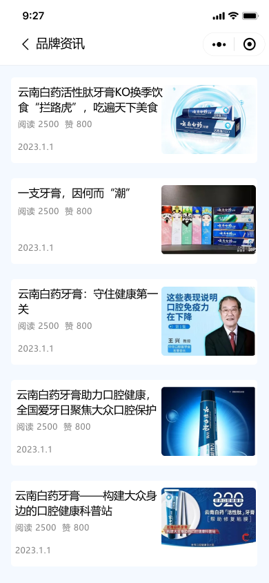
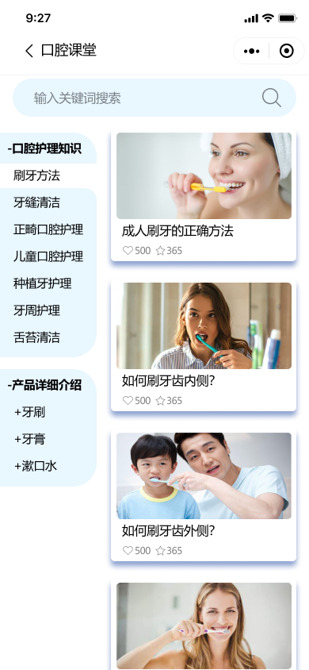
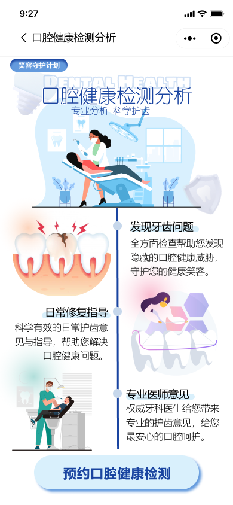

Content Ecosystem
Brand content, oral-care education, and health guidance
These features do more than communicate promotions; they explain why users should buy. Brand news adds credibility, oral-care lessons provide practical guidance, and health-check content adds professional authority and clear action cues.


